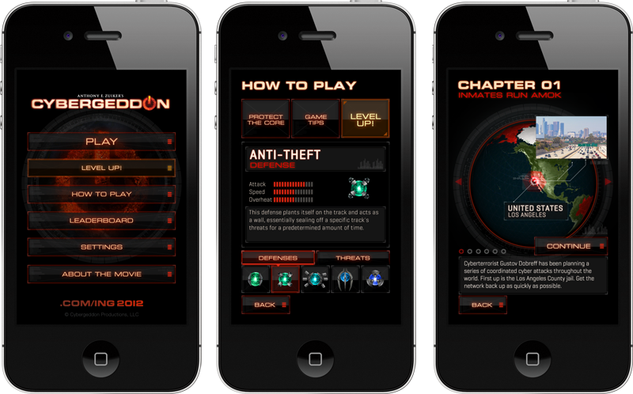
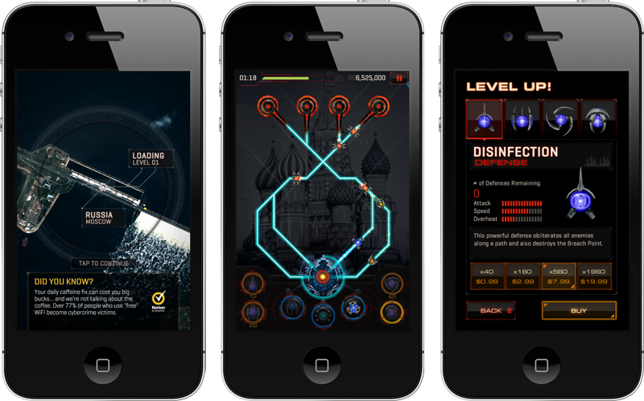
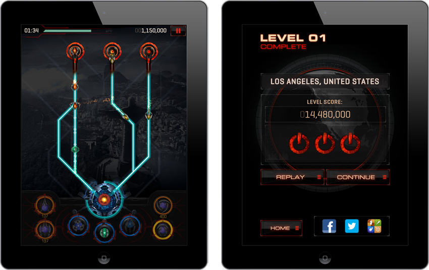

download game on App Store | read synopsis
objectives
to build an action iOS game using Unity 3D engine that simulates a defense mechanism against virus attack at micro level. the game was launched prior to the release of Anthony E. Zuiker's web series Cybergeddon.
role + responsibilities
product lead and creative director
- responsible for overall UX design and playability (mechanic, game dynamic, scoring, level design overview,etc.), player engagement and product monetization strategy.
- led team of art directors, designers, illustrators, engineers, 3D modelers/animators and producer over the course of 7+ months development cycle, including facilitate team ideation sessions.
cybergeddon productions l.l.c. | **usa**
deliverables
- 30 levels of action-packed game mechanic built using Unity Engine featuring overhead ‘circuit board’ style design translating cyber attack onslaught
- original story, artwork and game world design
- in-app features to enhance game play
- social challenge via Facebook, Twitter and Game Centre integration
Agile-led project management with daily stand-up and check out, backlog and unified communication tool using ActiveCollab project management tool
tools
unity 3D, autodesk maya, adobe creative suites, test flight and GitHub repository for ongoing prototype and development progress
deliverables snapsots snapshots of the game screens as featured on iOS devices



. . . . .
#trigger, #shanghai, #losangeles, #videogames, #iOS, #creativedirection
. . . . .